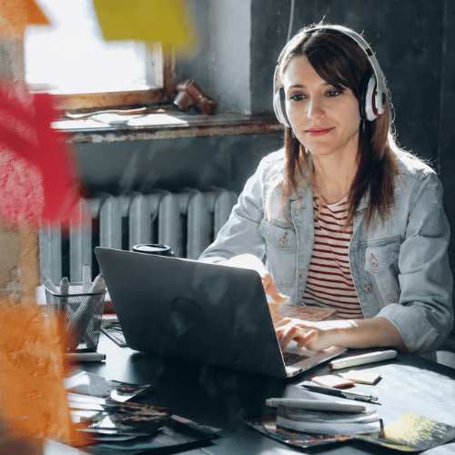
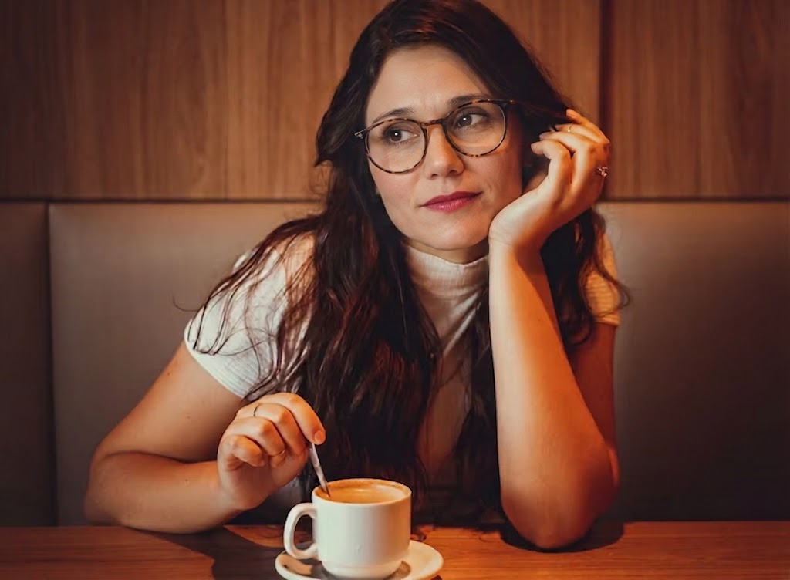

Letras + Código
Comunicadora por profesión, diseñadora por pasión y desarrolladora web por elección.
Me dedico a conectar ideas, personas y código. Mi habilidad es fusionar el mundo de las palabras, lo visual y la tecnología para crear experiencias digitales completas.

Mi viaje (hasta ahora)
Empecé en el mundo de las historias reales como periodista de gráfica. Ahí aprendí a investigar y a escribir con propósito. Después pasé a la comunicación institucional y la gestión de redes sociales, donde descubrí el ritmo de las comunidades digitales.En el camino me enamoré de la creación audiovisual y del diseño gráfico. Este último lo aprendí de forma autodidacta, impulsada puramente por la práctica y la pasión de ver cómo las ideas cobran forma visual y el poder de comunicar con otros elementos, además de las palabras.

El nuevo capítulo: del mensaje al código
Siempre sentí pasión por la programación, pero cuando era más joven, aprender y acceder a la tecnología no estaba tan al alcance de la mano como hoy. Después de hacer mi camino profesional en el área de la Comunicación, tuve la posibilidad de volver a aquello que siempre despertó mi curiosidad: la programación. Ahora puedo dedicarme a aprender, crear y profundizar en esta disciplina, una de mis grandes pasiones. Ya di mi primer gran paso y me certifiqué como Web Developer con una puntuación de 9.7/10, y actualmente continúo mi formación como Full Stack Developer.

Mi stack y herramientas
- Código: HTML5, CSS3, SASS y SCSS.
- Control y despliegue: Git, GitHub y Vercel.
- Creatividad: Diseño gráfico autodidacta, edición audiovisual, escritura creativa y mucho más!.

Fuera de la pantalla
Cuando no estoy programando o diseñando, seguro estoy buscando un nuevo libro, editando algún video por pura diversión o tomando un buen café mientras imagino mi próximo proyecto.